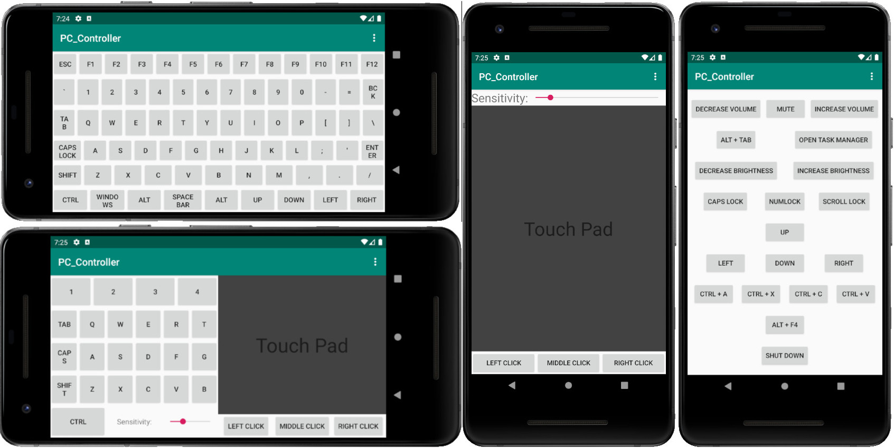
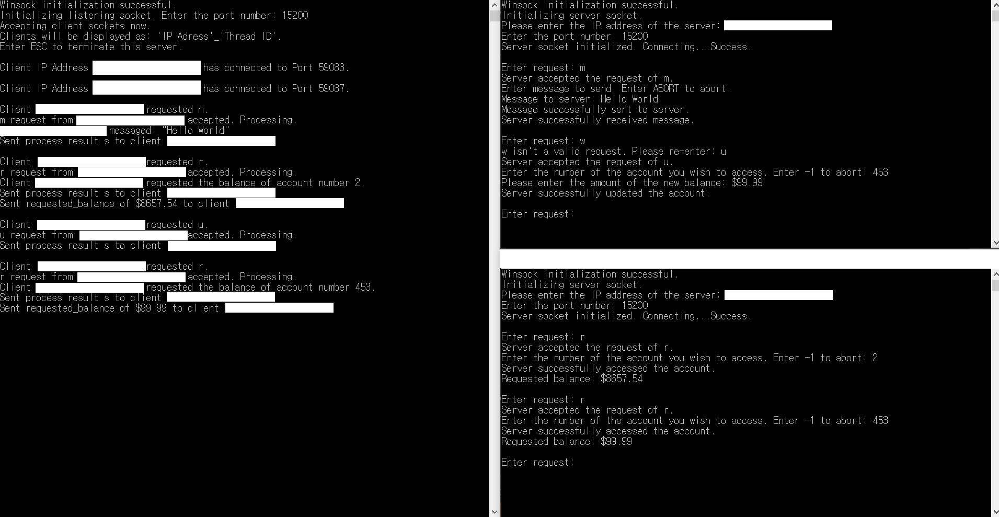
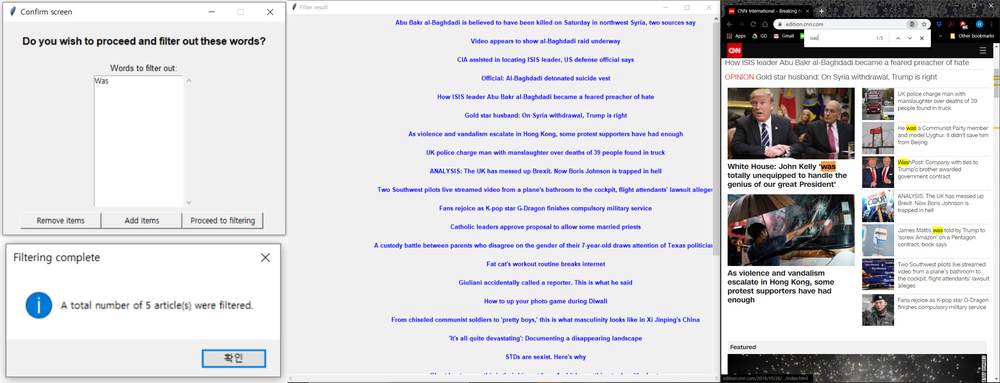
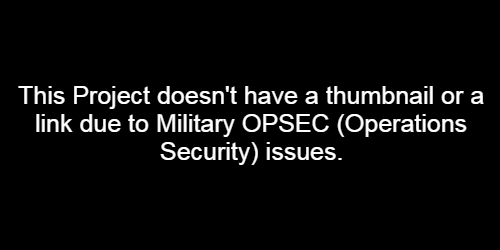
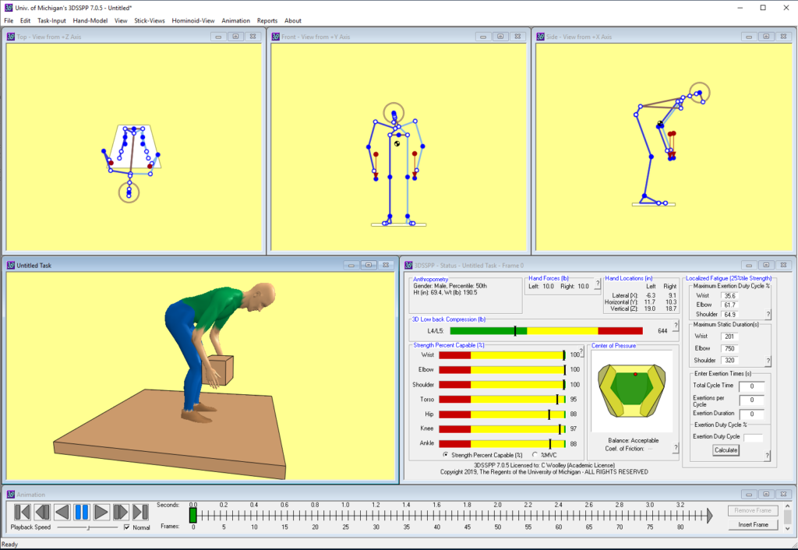
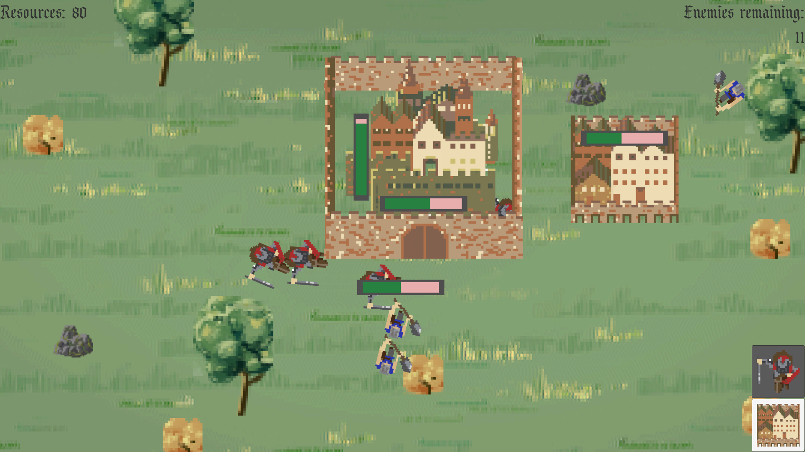

An Android application that establishes a Transmission Control Protocol (TCP) connection
between the app's client written in Java and a Desktop Computer's server written in
Python to grant the user remote access to the PC. The app features a full virtual
keyboard, mouse cursor movement, First Person Shooter game control
(my personal interests in games) and a list of hotkeys for the computer.

A project that simulates a simple bank account balance tracker. Program is able to read
or write on the bank account balances from multiple users simultaneously through a TCP
Window socket connection using multi-threaded system. The bank balance data is managed
through a set-associative cache system with features such as Least Recently Used(LRU),
Dirty Bit and write-back policies.

A Python script that allows the user to view all news articles from CNN / Fox News
except for the ones that contain the keywords user inputs into the provided filter.
Unlike the conventional filters that provide articles that contain the keyword and
discard the rest, this filter in opposite is used to view all the general headlines
while discarding the ones that contain the keyword. This filter is useful when the user
wishes to view all the headlines in the main page spanning multiple sections discarding
only the unwanted articles.

Computerized the old military sentry / guard duty scheduling system by developing a
C++ program to automatically generate a schedule that is fairer and more efficient
than creating the schedule by hand. I designed the data structures including a custom
functor for the priority queue based on the conventional scheduling system and
modified the program regularly as the scheduling rules changed or as the CO requested.

3DSSPP software is a C++ job simulation program that provides posture data,
force parameters, male/ female anthropometry, static strength requirements for tasks
such as lifts, presses, pushes, and pulls. The software can aid the analyst in designs
and redesigns prior to the actual construction or reconstruction of the workplace or
task.
I was responsible for the updates of the outdated codes to newer versions to make the
project compatible with Visual Studio 2015, design of the UI, debugging and
optimization of human module rendering and the development of the module's ankle
restraints.

A real time strategy (RTS) game developed with Unity engine during the Game Jam
hosted by the Wolverine Soft. The game was developed by a team of 2 programmers,
1 musician and an artist. The player is a king who tries to protect the castle from
the rioters, and controls the soldiers spawnable during the preparation phase to
fight enemies that grow larger in number as the stage progresses.